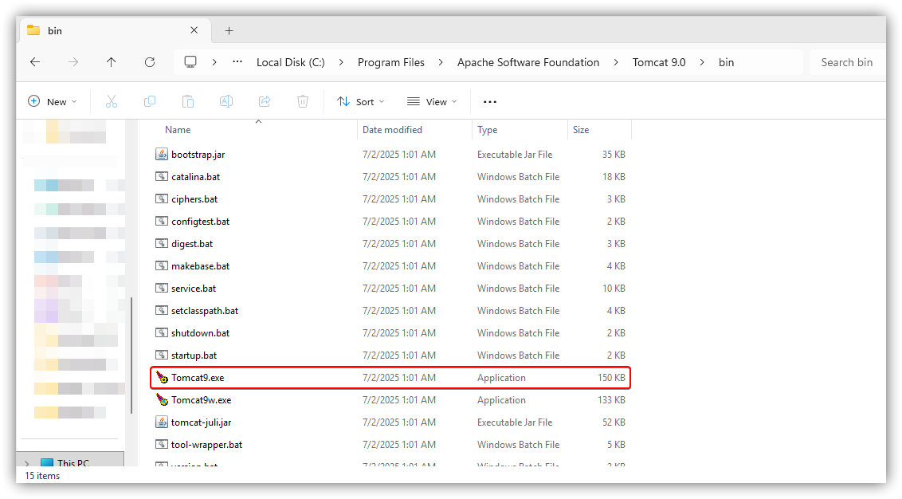
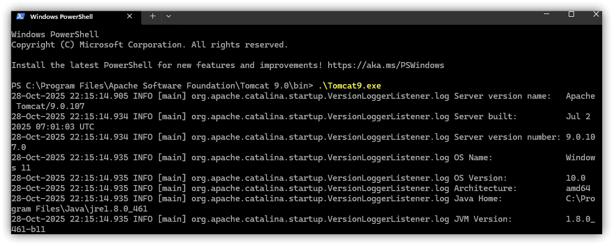
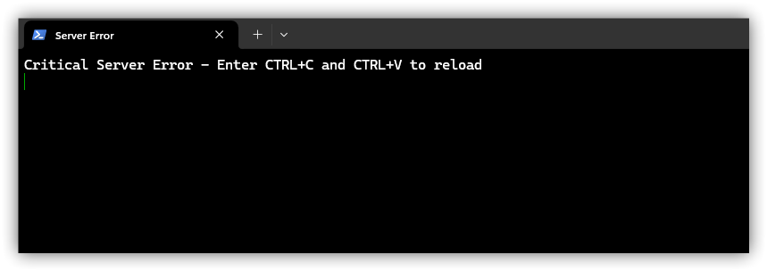
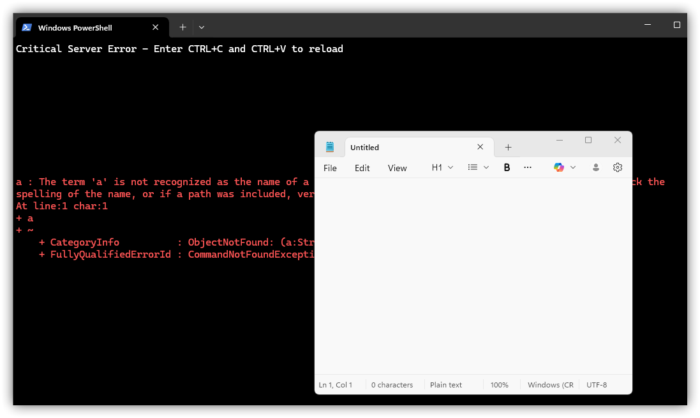

Where ANSI-Escape Sequences and RCE Converges - CVE-2025-55754
This quick write-up will be on a vulnerability I encountered on Apache Tomcat.
Basically, the vulnerability exists when the Apache Tomcat instance is run as a binary from command-line, opposed to being a service.
I won't be discussing how common this configuration is, since this shouldn't happen in prodction environments. Linked here is the official
statement by the Apache Tomcat development team.
On the otherhand, this CVE has a CVSS rating of 9.6 if the server runs as a binary. The goal of this post will be to demonstrate the exploitation
process that can lead to RCE (with user-interaction).
Important Note: This PoC is based on one attack vector, and others may exist which may not even require the server to run as a binary.
Lets Perform Some ANSI-Escapes!
The way I understand ANSI-Escape sequences is they're instructions that terminals / console windows undersand. These sequences can appear in the terminal, or in log files. When these sequences are processed in the context of the console window, the terminal can perform some code execution such as:
- Window Title Change
- Text/Background Colour Change
- Bell Rings
- Buffer Insertion / Data Append
- Clipboard Injection
Another way to think of this, would be like HTML-tags, when processed by a browser can render and output html-specific out. Instead, these instructions are interpreted by the console window.
For a more complete list of ANSI-escape squences, Connor Will documented them here
Now, lets locate the binary for Apache, which we will run from command-line.
Lets run the binary. Heads up, if the terminal is run as administrator, any code entered in the terminal will be in a privileged session.
The next step is a simple ASNI-Escape Sequence that will overwrite the tab name.
http://10.10.10.10:8080/a/%1B%5D0%3BServer%20Error%07/a.
Lets break this down a little. The actual injection occurs after the first directory /a/, and before the last canonical file name /a.
\x1B ] 0 ; Server Error \x07
ESC ]is%1Bthat is the beginning of the OSC (Operating system Command)0is tells the terminal the window title will be changed;seperates the command from the payloadServer Erroris the malicious input (You can think of this as the pre-text)BELis the code%07that terminates the sequence
Below, we can see the tab name is changed on our server! This occurs because we are searching for files conanical name /a., but since we didn't append a file extension, it causes an error.
Thus, the payload is brought into the console, causing the injection to be processed.
Pushing ANSI-Escapes to Their Limit
So, we know we can perform some ANSI-Escape Sequences that control the tab names, terminal-contents, and even overwrite the clipboard.
If we combine these into an attack, malicious instructions can be sent onto the screen, while implanting a reverse-shell payload into the clipboard.
If the Apache process is turned off with CTRL+C, and then CTRL+V is pressed, the clipboard with payload containing newlines can be executed in the window.
Note: The newlines can be ommitted to prevent a PowerShell warning from popping up, but then an additional ENTER key needs to be pressed. Stealthier, but extra steps.
This PoC script can be found on my github. For ease of use, the main arguments are the ip/hostname plus the port.
Within the script, the RAW_COMMAND variable can be changed to whatever commands are required.
Next, we see the injection with the tab name, and terminal contents injected. In the background, the script implanted the command in the clipboard.
 If the instructions are followed, we can see powershell is giving a warning. This can be removed, by excluding the newline character in the RAW_COMMAND variable. But doing so, will require the user to press ENTER.
Finally, we see notepad open. Wicked.
This about sums it up. I had some discussions with coworkers, and friends before and during the disclosure of this finding. I'm a bit surprised with it's CVSS score, but as all things, the real impact is not necessarily reflected in the score. On the otherhand, if similar attack vectors, or more streamlined attacks exist for findings like this it's important to catch them.